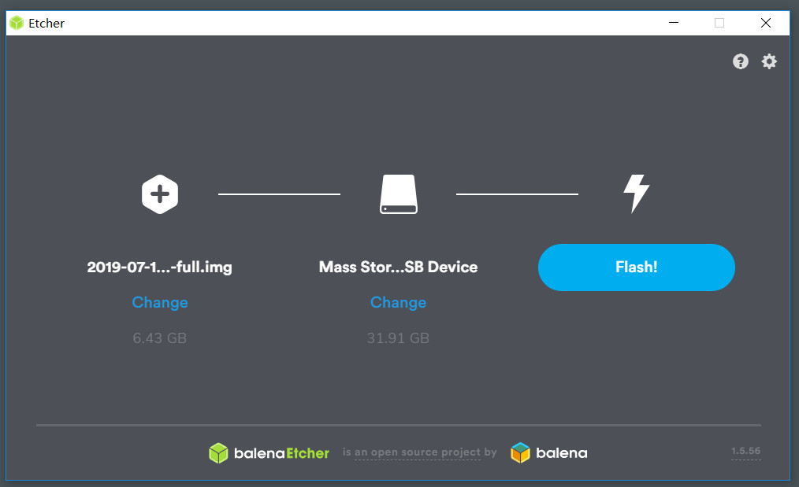
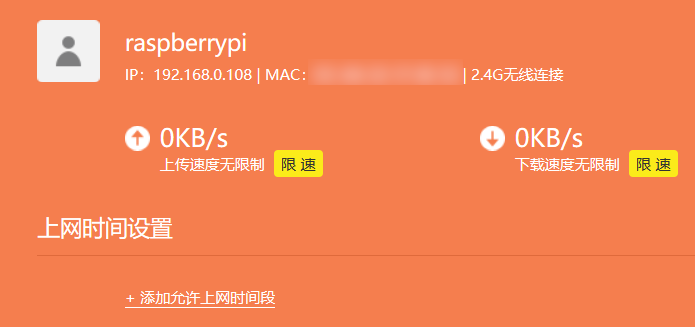
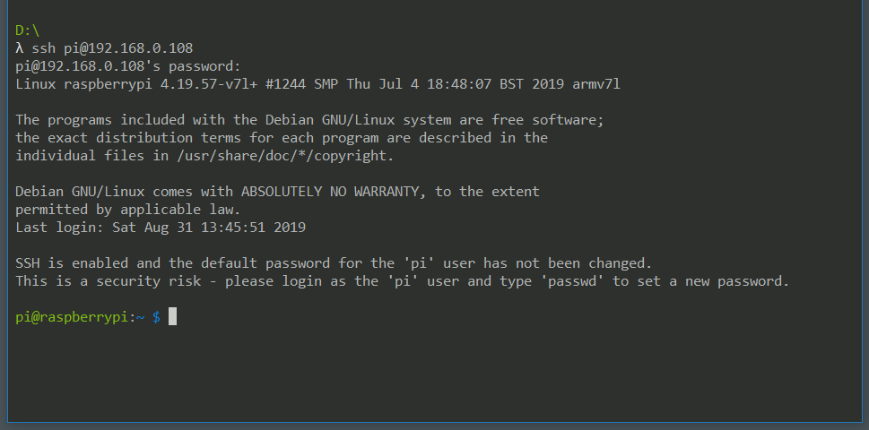

一直有买 NAS 做下载姬的想法，但见过太多人买回家吃灰的例子，而且我的松鼠症并不严重，所以犹豫着。直到听闻树莓派4代发售，价格比 NAS 便宜，正好家里也有闲置 U 盘，思来想去，果然还是树莓派比较适合老子.jpg
1. 准备工作
在淘宝找到相关店家，根据自己的需要选择相应套餐，因为需要预订，大概一周后到货。
树莓派到手后，先将 Raspbian 系统镜像写入 micro SD 卡，推荐使用 官方教程 提到的 balenaEtcher，十分方便。

之后配置远程 SSH 和 wifi（如果选择直接在树莓派上外接显示器和键盘就不用进行这一步），简单来说就是在根目录新建 SSH 文件和 wpa_supplicant.conf 文件，文件内容参考 官方教程 。
配置好后，插入 SD 卡启动树莓派，在路由后台管理中找到树莓派的 IP。

SSH 远程登录，默认用户名 pi，默认密码 raspberry，完成。（记得修改默认密码

2. 配置
(1) 更新升级系统
由于国内网络环境，需要修改源以免更新速度缓慢，可以 据此 修改（感谢清华源）。
Raspbian 基于 Debian，使用 apt upgrade 更新升级。如遇到更新途中卡死、Ctrl+C 无法终止的情况，使用 kill 结束进程，恢复，重启，再更新。
(2) 格式化 U 盘
U 盘用于存放我们的下载文件，使用 exFAT 格式以便存储超过 4 GB 的文件。sda1 是我的 U 盘设备，请根据自己情况修改。
apt install exfat-fuse
# 若提示未找到 mkfs.exfat，可将 /usr/sbin 加入 PATH。
mkfs.exfat /dev/sda1
接着修改 /etc/fstab，让系统每次启动都自动挂载 U 盘。
# 追加写入，勿删改文件内其它内容
/dev/sda1 /mnt/udisk exfat rw,defaults 0 0
最后使用 mount -a 重新载入配置，检查有无报错。
额外的，我还将 U 盘路径软链接到用户目录以方便查看。
ln -s /mnt/udisk ~/downloads/udisk
(3) 编译安装 qBittorrent
其实软件仓库中有 qBittorrent，但我需要的是 qBittorrent-Enhanced-Edition，可以自动封禁如迅雷吸血客户端的 IP。如果你没有这个需求，直接 apt install qBittorrent 即可（或者安装 qBittorrent-nox，无需 GUI）。
编译需要依赖 Boost、Qt5 等，安装
apt install qt5-default qttools5-dev-tools libboost1.67-all-dev libtorrent-rasterbar-dev
克隆源码，在其目录执行
# --disable-gui: 不需要 GUI
# 如果提示无法找到 Boost，需加 --with-boost-libdir 参数
./configure --disable-gui --with-boost-libdir=/usr/lib/arm-linux-gnueabihf
make -j$(nproc)
make install
由于树莓派孱弱的性能，编译过程可能需要十多分钟。
之后启动 qBittorrent，浏览器远程访问，默认端口 8080，用户名 admin，密码 adminadmin。记得改密码。
配置一番后就可以开始下载了。

(4) 安装 samba
为与 Windows 共享文件，需安装 samba，官方 和网上其它地方都有教程，不细述。
值得注意的是，如果你和我一样使用了软链接，还需要在 samba 配置文件加入如下内容
[global]
allow insecure wide links = yes
[share]
follow symlinks = yes
wide links = yes
改好配置后，systemctl restart smdb.service 重启 samba。
3. 使用情况
室温 30℃，风冷闲时 44℃。
下载速度没严格测试，根据已下载的情况，最高 9 MiB/s，与资源热度和网速有关，应该不是上限。没有测试内网文件传输速度。
测试 5G 大小 1080P 视频文件，可流畅播放，但如果大幅跳转有短暂卡顿。
总的来说还行吧，作为轻量下载姬，自分满足。
附：如果同时进行 BT 和 PT 下载，请分开安装。推荐使用 docker（官方安装教程），因为 PT 一般有客户端白名单，所以 docker 直接下载 qBittorrent 或其它官方 BT 客户端镜像即可。
注：本文并非详细的安装指南，如有未描述清楚的地方请查阅其它资料。